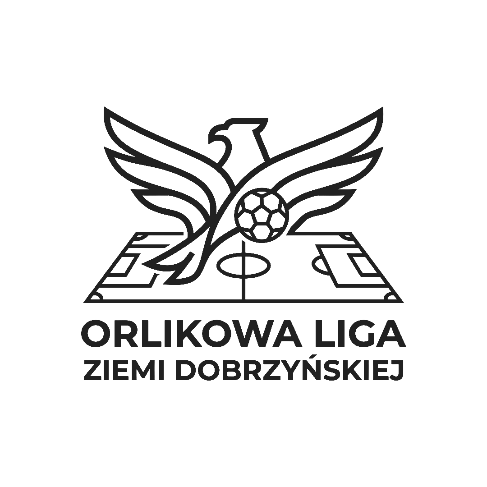

Ta strona korzysta z plików cookie. Używamy ich wyłącznie do zapewnienia poprawnego działania serwisu oraz zapamiętania Twoich preferencji. Korzystając dalej ze strony, wyrażasz na to zgodę. Więcej informacji znajdziesz w zakładce „Informacje”.